Our
aim is to solve a problem that involves calculating the center of gravity
(center of mass) of a 2D object. To do this, we need to develop a calculating
module that can interact with GiD.
The problem: center of mass
The
center of mass (xCM,yCM) of a two-dimensional body is defined as
where
r(x,y) is the density of the material
at point (x,y) and S is the surface of the body.
If
we consider the N gravitational forces as pi =g mi, each one concentrated on
point (xi,yi), the new center of mass will be modified as follows:
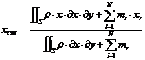
To
solve the problem numerically, the integrals will be transformed into sums:
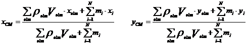
Each
of the N elements is treated as concentrated weight whose mass N1 is defined as
the product of the (surface) density and the surface of the element.
GiD
Preprocess makes a discretization of the object under study and generates a
mesh of elements, each one of which is assigned a material and some conditions.
This preprocessing information in GiD (mesh, materials, and conditions) enables
the calculating module to generate results. For the present example, the
calculating module will find the distance of each element relative to the
center of mass of the object.
Finally,
the results generated by the calculating module will be read and visualized in
GiD Post-process.
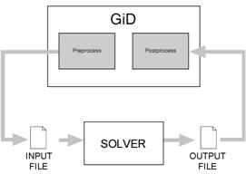
GiD
must adapt these data to deal with them. Materials, boundary and/or load
conditions, and problem data in general must be defined.
GiD
configuration is accomplished through text formatted files. The following files
are required:
.prb:
configuration of the general parameter
.mat:
configuration of materials and their properties
.cnd:
configuration of the conditions imposed on the calculation
.bas:
(template file) the file for configuring the format of the interchange that
mediates between GiD data and the calculating module. The file for
interchanging the data exported by GiD has the extension .dat. This file stores
the geometric and physical data of the problem.
.bat:
the file that can be executed in batches called from GiD. This file initiates
the calculating module.
The
calculating module (in this example cmas2d.exe) solves the equations in the
problem and saves the results in the results file. This module may be programmed
in the language of your choice.
GiD
Post-process reads the following files generated by the calculating module:
project_name.post.res:
results file.
Each
element of the mesh corresponds to a value.
project_name.post.msh:
file containing the post-process 2D mesh.
If
this file does not exist, GiD uses the preprocess mesh in the postprocess.
Diagram
depicting the files system:
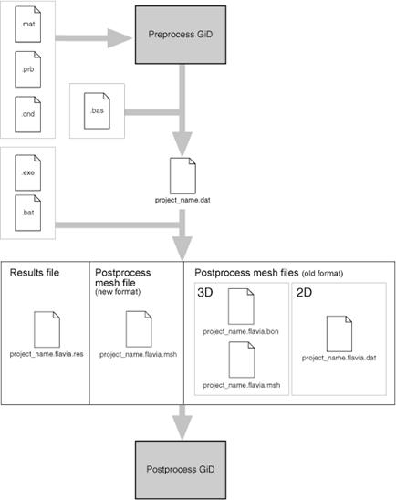
Creating the Subdirectory for the Problem Type
Create
the subdirectory "cmas2d.gid". This subdirectory has a .gid extension
and will contain all the configuration files and calculating module files
(.prb, .mat, .cnd, .bas, .bat, .exe).
NOTE: In Windows systems,
if you want the problem type to appear in the GiD DataàProblem type menu, create the subdirectory within
"Problemtypes", located in the GiD folder - for instance, C:\GiDWin\Problemtypes\cmas2d.gid
Create
the materials file "cmas2d.mat". This file stores the physical
properties of the material under study for the problem type. In this case,
defining the density will be sufficient.
Enter
the materials in the "cmas2d.mat" file using the following format:
NUMBER:
Identifier of the material
MATERIAL:
Name of the material (without spaces)
QUESTION:
Property of the material. For this example, we are interested in the density of
the material.
VALUE:
Value of the property
…
END
MATERIAL
…
In
GiD, the information pertaining to the "cmas2d.mat" file is managed
in the materials window, located in DataàMaterials.
File:
cmas2d.mat
|
MATERIAL:
Air
QUESTION:
Density
VALUE:
1.01
END
MATERIAL
MATERIAL:
Steel
QUESTION:
Density
VALUE:
7850
END
MATERIAL
MATERIAL:
Aluminium
QUESTION:
Density
VALUE:
2650
END
MATERIAL
MATERIAL:
Concrete
QUESTION:
Density
VALUE:
2350
END
MATERIAL
MATERIAL:
Water
QUESTION:
Density
VALUE:
997
END
MATERIAL
|
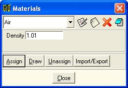
The
GiD Materials window, for assigning materials
|
|
|
Create
the "cmas2d.prb" file. This file contains general information for the
calculating module, such as the units system for the problem, or the type of
resolution algorithm chosen.
Enter
the parameters of the general conditions in "cmas2d.prb" using the
following format:
PROBLEM
DATA
QUESTION:
Name of the parameter. If the name is followed by the #CB# instruction, the parameter
is a display-type menu. The options in the menu must then be entered between
parentheses and separated by commas.
For example, Unit_System#CB#(SI,CGS,User).
VALUE:
The default value of the parameter.
…
END
GENERAL DATA
In
GiD, the information in the "cmas2d.prb" file is managed in the
materials window, which is located in DataàProblem
Data.
File:
cmas2d.prb
|
PROBLEM
DATA
QUESTION:
Unit_System#CB#(SI,CGS,User)
VALUE:
SI
QUESTION:
Title
VALUE:
Default_title
END
PROBLEM DATA
|
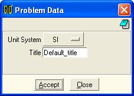
The
GiD Problem Data window, for configuring of the general conditions of the
cmas2d module
|
Create
the "cmas2d.cnd" file, which specifies the boundary and/or load
conditions of the problem type in question. In the present case, this file is
where the concentrated weights on specific points of the geometry are
indicated.
Enter
the boundary conditions using the following format:
NUMBER:
Identifier of the condition
CONDITION:
Name of the condition
CONDTYPE:
Type of entity to which the condition is to be applied. This includes the
parameters "over points," "over lines," "over
surfaces," and "over volumes". In this example the condition is
applied "over points."
CONDMESHTYPE:
Type of entity of the mesh to which the condition is to be applied. The
possible parameters are "over nodes" or "over elems". In
this example, the condition is applied on nodes.
QUESTION:
Name of the parameter of the condition
VALUE:
Default value of the parameter
…
END
CONDITION
…
In
GiD, the information in the "cmas2d.cnd" file is managed in the
conditions window, which is found in Dataà
Conditions.
File:
cmas2d.cnd
|
CONDITION:
Point-Weight
CONDTYPE:
over points
CONDMESHTYPE:
over nodes
QUESTION:
Weight
VALUE:
0
END
CONDITION
|
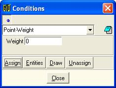
The
GiD Conditions window, for assigning the cmas2d boundary and load conditions
|
Creating
the Data Format File (Template file)
Create
the "cmas2d.bas" file. This file will define the format of the .dat
text file created by GiD. It will store the geometric and physical data of the
problem. The .dat file will be the input to the calculating module.
NOTE: It is not necessary
to have all the information registered in only one .bas file. Each .bas file
has a corresponding .dat file.
Write
the "cmas2d.bas" file as follows:
The
format of the .bas file is based on commands. Text not preceded by an asterisk
is reproduced exactly the same in the .dat file created by GiD. A text preceded
by an asterisk is interpreted as a command.
Example:
.bas
file .dat
file
|
%%%%
Problem Size %%%%
Number
of Elements & Nodes:
*nelem
*npoin
|
à
|
%%%%
Problem Size %%%%
Number
of Elements & Nodes:
5379
4678
|
The
contents of the "cmas2d.bas" file must be the following:
.bas
file
|
==================================================================
General Data File
==================================================================
%%%%%%%%%%%%%%%%%%
Problem Size %%%%%%%%%%%%%%%%%%%%%%%%%%%%%%%%%
Number
of Elements & Nodes:
*nelem
*npoin
|
In
this first part of the "cmas2d.bas" file, general information on the
project is obtained.
*nelem:
returns the total number of elements of the mesh.
*npoin:
returns the total number of nodes of the mesh.
|
Coordinates:
Node X Y
*set
elems(all)
*loop
nodes
*format
"%5i%14.5e%14.5e"
*NodesNum
*NodesCoord(1,real) *NodesCoord(2,real)
*end
nodes
|
This
command provides a rundown of all the nodes of the mesh, listing their
identifiers and coordinates.
*loop,
*end: commands used to indicate the beginning and the end of the loop. The
command *loop receives a parameter.
*loop
nodes: the loop iterates on nodes
*loop
elems: the loop iterates on elements
*loop
materials: the loop iterates on assigned materials
*set
elems(all): the command to include all the elements of the mesh when making the
loop.
*format:
the command to define the exit format for numerical expressions. This command
must be followed by the numerical format expressed in C.
*NodesNum:
returns the identifier of the present node
*NodesCoord:
returns the coordinates of the present node
*NodesCoord
(n, real): returns the x, y or z coordinate in terms of the value n:
n=1
returns the x coordinate
n=2
returns the y coordinate
n=3
returns the z coordinate
|
Connectivities:
Element Node(1) Node(2) Node(3) Material
*loop
elems
*format
"%10i%10i%10i%10i%10i"
*ElemsNum
*ElemsConec *ElemsMat
*end
elems
|
This
provides a rundown of all the elements of the mesh and a list of their
identifiers, the nodes that form them, and their assigned material.
*ElemsNum:
returns the identifier of the present element
*ElemsConec:
returns the nodes of an element in a counterclockwise order
*ElemsMat:
returns the number of the assigned material of the present element
|
Begin
Materials
Nº
Materials= *nmats
|
This
gives the total number of materials in the project
*nmats:
returns the total number of materials
|
Mat.
Density
*loop
materials
*format
"%4i%13.5e"
*set
var PROP1(real)=Operation(MatProp(Density, real))
*MatNum
*PROP1
*end
|
This
provides a rundown of all the materials in the project and a list of the
identifiers and densities for each one.
*MatProp
(density, real): returns the value of the property "density" of the
material in a "real" format.
*Operation
(expression): returns the result of an arithmetic expression. This operation
must be expressed in C.
*Set
var PROP1(real)=Operation(MatProp(Density, real)): assigns the value returned
by MatProp (which is the value of the density of the material) to the variable
PROP1 (a "real" variable).
*PROP1:
returns the value of the variable PROP1.
*MatNum:
returns the identifier of the present material
|
Point
conditions
*Set
Cond Point-Weight *nodes
*set
var NFIX(int)=CondNumEntities(int)
Concentrate
Weights
*NFIX
|
This
provides the number of entities that have been assigned a particular condition.
*Set
Cond Point-Weight *nodes: this command enables you to select the condition to
work with from that moment on. For the present example, select the condition
"Point-Weight".
*CondNumEntities(int):
returns the number of entities that have been assigned a certain condition.
*Set
var NFIX(int)= CondNumEntities(int): assigns the value returned by the command
CondNumEntities to the NFIX variable (an "int" variable).
*NFIX:
returns the value of the NFIX variable.
|
Potentials
Prescrits:
Node Tipus
Valor/Etiqueta
*Set
Cond Point-Weight *nodes
*loop
nodes *OnlyInCond
*NodesNum
*cond(1)
*end
|
This
provides a rundown of all the nodes assigned the condition "Point-Weight"
with a list of their identifiers and the first "weight" field of the
condition in each case.
*loop
nodes *OnlyInCond: executes a loop that will provide a rundown of only the
nodes that have been assigned a condition.
*cond(1):
returns the number 1 field of a condition previously selected with the *set
cond command. The field of the condition may also be selected using the name of
the condition, for example cond(weight).
File:
cmas2d.bas
|
=================================================================
General Data File
==================================================================
%%%%%%%%%%%%%%%%%%
Problem Size %%%%%%%%%%%%%%%%%%%%%%%%%%%%%%%%%
Number
of Elements & Nodes:
*nelem
*npoin
%%%%%%%%%%%%%%%%%%%
Mesh Database %%%%%%%%%%%%%%%%%%%%%%%%%%%%%%%
Coordinates:
Node X Y
*set
elems(all)
*loop
nodes
*format
"%5i%14.5e%14.5e"
*NodesNum
*NodesCoord(1,real) *NodesCoord(2,real)
*end
nodes
.................................................................
Connectivities:
Element Node(1) Node(2) Node(3) Material
*loop
elems
*format
"%10i%10i%10i%10i%10i"
*ElemsNum
*ElemsConec *ElemsMat
*end
elems
.................................................................
Begin
Materials
Nº
Materials= *nmats
Mat.
Density
.................................................................
*loop
materials
*format
"%4i%13.5e"
*set
var PROP1(real)=Operation(MatProp(Density, real))
*MatNum
*PROP1
*end
.................................................................
Point
conditions
*Set
Cond Point-Weight *nodes
*set
var NFIX(int)=CondNumEntities(int)
Concentrate
Weights
*NFIX
.................................................................
Potentials
Prescrits:
Node Tipus
Valor/Etiqueta
*Set
Cond Point-Weight *nodes
*loop
nodes *OnlyInCond
*NodesNum
*cond(1)
*end
.................................................................
|
Create
the file "cmas2d.c". This file contains the code for the execution
program of the calculating module. This execution program reads the problem
data provided by GiD, calculates the coordinates of the center of mass of the
object and the distance between each element and this point. These results are
saved in a text file with the extension .post.res.
Compile
and link the "cmas2d.c" file in order to obtain the executable
cmas2d.exe file.
The
calculating module (cmas2d.exe) reads and generates the files described below.
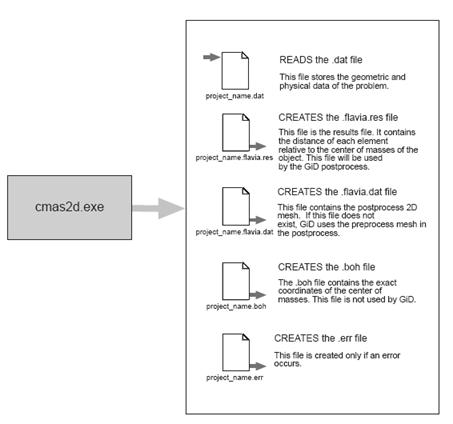
NOTE: The
"cmas2d.c" code is explained in the appendix.
Creating the
Execution File for the Problem Type
Create
the "cmas2d.bat" file. This file connects the data file(s) (.dat) to
the calculating module (the cmas2d.exe program). When the GiD Calculate option is
selected, it executes the .bat file for the problem type selected.
When
GiD executes the .bat file, it transfers three parameters in the following way:
(parameter
3) / *.bat (parameter 2) / (parameter 1)
parameter
1: project name
parameter
2: project directory
parameter
3: Problem type location directory
NOTE: The .bat file as
used in Windows is explained below; the shell script for UNIX systems is also
included with the documentation of this tutorial.
del %2\%1.log
del %2\%1.post.res
del %2\%1.post.dat
|
This
deletes results files from any previous calculations to avoid confusion.
rem
OutputFile: $2/$1.log
|
A
comment line such as "rem OutputFile: file_name.log" means that the
contents of the file indicated will be shown if the user clicks Output View in
CalculateàCalculate window.
In
this example the .log file is shown. This file contains the coordinates of the
center of mass.
The Process window.
A
comment line such as "rem ErrorFile: file_name.err" means that the
indicated file will contain the errors (if any). If the .err file is present at
the end of the execution, a window comes up showing the error. The absence of
the .err file indicates that the calculation is considered satisfactory.
GiD
automatically deletes the .err files before initiating a calculation to avoid
confusion.
Executing
the cmas2d.exe file.
File: cmas2d.win.bat
|
@ECHO OFF
del %2\%1.log
del %2\%1.post.res
del %2\%1.post.dat
rem
OutputFile: %2\%1.log
rem
ErrorFile: %2\%1.err
%3\cmas2d.exe
%2\%1
|
Using the
problemtype with an example
In
order to more easily understand the way the calculating module works, simple
problems with limited practical use have been chosen. Although these problems
do not exemplify the full potential of the GiD program, the user may intuit
their answers and, therefore, compare the predicted results with those obtained
in the simulations.
Executing the calculation for
an object made of homogeneous material
From
the Files menu, select Read. Select the file “ToMesh2d.gid” and click Open.
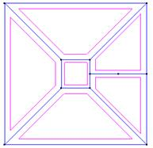
Contents of the "ToMesh2d.gid" file.
Choose
the option DataàProblem typeàCmas2d.
Choose
DataàMaterials. The materials window
is opened. From the Materials menu in this window, choose the option Air.
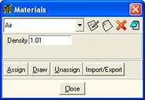
The Materials window
Click
AssignàSurfaces and select all the
surfaces. Press ESC when this step is finished.
Choose
the MeshàGenerate option.
A
window appears in which to enter the maximum element size for the mesh to be
generated. Enter 2 and click OK. The mesh shown will be obtained.
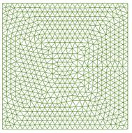
The mesh of the object
Now
the calculation may be initiated. Choose the Calculate option from the
Calculate menu, thus executing the calculating module.
Wait
until a box appears indicating that the calculation has finished.
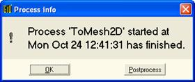
Process information box
Choose
the option FilesàPostprocess.
From
the Windows menu, choose the View Results option. A window appears from which
to visualize the results. By default, no result is visualized on entering the
postprocessing component.
From
the View combo box in the View Results window, choose the Contour Fill option.
A set of available result are displayed.
|

|
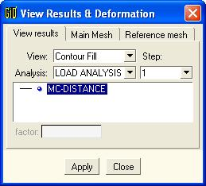
|
The View Results window.
Now
choose the MC-DISTANCE result and click Apply. A graphic representation of the
calculation is obtained.
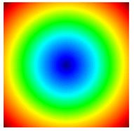
Visualizing the distance (MC-DISTANCE) from the center of
mass of the object
to each element, for an object of homogeneous material
The
results shown on the screen reproduce those we anticipated at the outset of the
problem: the center of mass of an object made of homogeneous material coincides
with its geometric center. The .log file will provide the exact coordinates of
this point.
Choose
the Filesàpreprocess option.
Choose
the DataàMaterials option. The
Materials window is opened. From the Materials menu in this window, choose
Steel.
The Materials window, with "Steel" selected
Click
AssignàSurfaces and select the
surface indicated in the figure. Press ESC when this step is finished.
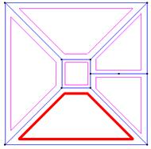
Assigning the material "Steel" to the surface
indicated
Choose
the MeshàGenerate option.
A
window appears in which to enter the maximum element size for the mesh to be
generated. Enter 2 and click OK.
Choose
the Calculate option from the Calculate menu, thus executing the calculating
module.
Choose
the FilesàPostprocess option.
Visualize
the new results.
|
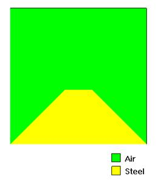
|
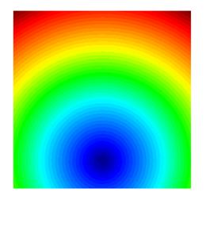
|
|
Visualizing
the materials making up the object
|
Visualizing
the distance (MC-DISTANCE) from the center of mass of the object to each
element, for an object of heterogeneous material
|
As anticipated, the center of mass is displaced toward the
material with greater density.
Executing
the calculation for an object of heterogeneous material and subject to external
point- weight
Choose
the Filesàpreprocess option.
Choose
the DataàConditions option. A window
is opened in which the conditions of the problem should be entered.
Since
the condition to be entered acts over points, select over points from the Type
menu in the Conditions window.
The Conditions window
Enter
the value 5e6 in the Weight box. Click Assign and select the point indicated in
the figure. Press ESC when this step is finished.
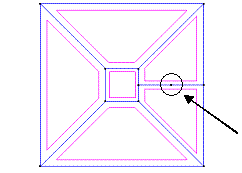
The point subject to external weight
Choose
MeshàGenerate.
A
window appears in which to enter the maximum element size for the mesh to be
generated. Enter 2 and click OK.
Choose
the Calculate option from the Calculate menu, thus executing the calculating
module.
Choose
the FilesàPostprocess option.
Visualize
the new results.
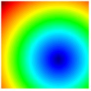
Visualizing the distance (MC-DISTANCE) from the center of
mass to each element, for an object of heterogeneous material subject to point
weight
Now
the condition is external point-weight. As anticipated, the new center of mass
is displaced toward the point under weight.
Appendix
The
program code for the calculating module
The
structure of the program that calculates the center of mass (cmas2d.c) is the
following:
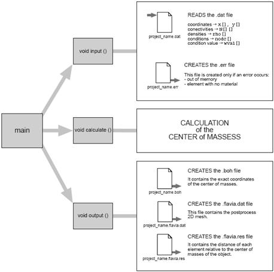
NOTE: In this example, a
code for the program will be developed in C. Nevertheless, any language of
choice may be used.
The
code of the program that calculates the center of mass (cmas2d.c) is as
follows:
The
cmas2d.c file
|
#include
<stdio.h>
#include
<stdlib.h>
#include
<fcntl.h>
#include
<string.h>
#include
<math.h>
#define
MAXMAT 1000
#define
MAXCND 1000
char
projname[80];
int
i, ielem, inod, icnd;
double *x, *y
int *N, *imat;
int
nodc[MAXCND];
double
rho[MAXMAT], wval[MAXCND];
int
Nelem, Nnod, Nmat, Ncnd;
double x_CG, y_CG
void input(void);
void
calculate(void);
void
output(void);
|
Declaration
of variables and constants used in the program.
|
void
main (int argc, char *argv[])
{
strcpy (projname, argv[1]);
input();
calculate();
output();
}
|
The main program.
The
main program is called from the cmas2d.bat file and has as its parameters the
name of the project. This name is stored in the variable projname.
The
main program calls the input (), calculate () and output () functions.
The
input function reads the .dat file generated by GiD. The .dat file contains
information about the mesh. The calculate function read and processes the data
and generates the results. The output function creates the results files.
void input ()
{
char filedat[80], sau1[80], sau2[80];
FILE* fp;
Int aux,j;
Void jumpline (FILE*);
Strcpy(filedat, projname);
Strcat(filedat,".dat");
fp = fopen(filedat, "r");
|
The
input() function.
The
first part of the input function links the project name with the .dat
extension, thus obtaining the name of the file that is to be read. This file
is opened in order to be read.
The
jumpline(FILE*) function is declared. This function reads 80 bytes of the file
that it receives as a parameter. It will also be used to jump lines of the text
when reading the .dat file.
|
for
(i=0; i<6; i++)
jumpline (fp);
fscanf(fp, "%d %d", &Nelem, &Nnod);
|
The
first six lines of the .dat file are jumped over since these are lines of
information for the user (see .bas file). Then the total number of elements and
nodes of the project are read and stored in the variables Nelem and Nnod
respectively.
|
x=(double *) malloc((Nnod+1)*sizeof(double)); if (x==NULL) {error=1;}
y=(double *) malloc((Nnod+1)*sizeof(double)); if (y==NULL) {error=1;}
N= (int *) malloc((Nelem+1)*3*sizeof(int)); if (N==NULL) {error=1;}
imat=(int *) malloc((Nelem+1)*sizeof(int)); if (N==NULL) {error=1;}
if (error)
{
strcpy(fileerr, projname);
strcat(fileerr,".err");
ferr = fopen(fileerr, "w");
fprintf(ferr, "\n \n \n ***** ERROR: Not enough memory. *****
\n");
fprintf(ferr, "(Try to calculate with less
elements)\n");
exit(1);
}
for (i=0; i<6; i++)
jumpline (fp);
|
Space
is reserved for storing the coordinates of the nodes (pointers x, y), the
connectivities (pointer N), and the materials corresponding to each element
(pointer imat).
In
case of error (insufficient memory), a file is created with the extension .err.
This file contains information about the error and the program is aborted.
The
next six lines are jumped over.
|
/*
reading the coordinates */
for (inod=1; inod<=Nnod; inod++)
fscanf (fp, "%d %lf %lf", &aux, &x[inod],
&y[inod]);
for (i=0; i<6; i++)
jumpline (fp);
|
The
coordinates of the nodes are read and stored in the x and y variables. The
node identifier indexes the tables of coordinates.
|
/*
reading connectivities */
for (ielem=1; ielem<=Nelem; ielem++){
fscanf (fp, "%d", &aux);
for(j=0;j<3;j++) fscanf (fp, "%d", &N[(ielem-1)*3+j]);
fscanf (fp, "%d", &imat[ielem]);
if (imat[ielem]==0)
{strcpy(fileerr, projname);
strcat(fileerr,".err");
ferr = fopen(fileerr, "w");
fprintf(ferr,"\n \n \n **ERROR: Elements with no material!!**\n");
exit(1);
}
}
|
The
connectivities are read and the N variable is saved. This variable is a Nelem x
3- size table with two fields. The nodes (3 nodes) forming the element are saved
in the first field. The element identifiers are saved in the second.
All
the elements are checked, ensuring that they have been assigned a material. If
the identifier of the material is 0 (meaning that no material has been assigned
to the element), an .err file is created containing information about the
error and the program is aborted.
|
for (i=0; i<5; i++)
jumpline (fp);
fscanf(fp, "%s %s %d",sau1, sau2, &Nmat );
for (i=0; i<3; i++)
jumpline (fp);
/* reading density of each material */
for (i=1; i<=Nmat; i++)
fscanf (fp, "%d %lf", &aux, &rho[i]);
for (i=0; i<4; i++)
jumpline (fp);
/* reading conditions*/
fscanf(fp, "%d", &Ncnd);
for (i=0; i<6; i++)
jumpline (fp);
for (icnd=1; icnd<=Ncnd; icnd++)
{
fscanf (fp, "%d %lf", &nodc[icnd], &wval[icnd]);
jumpline (fp);
}
fclose (fp);
}
|
Reading
the remaining information in the .dat file.
The
total number of materials is read and stored in the Nmat variable.
The
density of each material are read and stored in the rho table. The material
identifier indexes the densities.
The
total number of conditions is read and stored in the Ncnd variable.
The
nodes associated with a condition are read and stored in the nodc table indexed
by the condition identifier. The value of the condition is stored in wval,
another table indexed by the condition identifier.
|
void calculate ()
{
double v,aux1,aux2,aux3;
int n1, n2, n3;
int mat;
double x_CGi, y_CGi;
double x_num=0, y_num=0, den=0;
|
The
calculate() function. This is the function that calculates the center of mass.
Declaration
of the local variables used in calculate().
|
for (ielem=1; ielem<=Nelem; ielem++)
{
n1= N[0+(ielem-1)*3];
n2= N[1+(ielem-1)*3];
n3= N[2+(ielem-1)*3];
/* Calculating the volume (volume is the area, provided we
are dealing with 3D surfaces) */
v=fabs(x[n1]*y[n2]+x[n2]*y[n3]+x[n3]*y[n1]-x[n1]*y[n3]-x[n2]*y[n1]-
x[n3]*y[n2])/2;
/* The geometric center of the element is calculated */
x_CGi= (x[n1]+x[n2]+x[n3])/3;
y_CGi= (y[n1]+y[n2]+y[n3])/3;
/* sums are calculated*/
mat= imat[ielem];
x_num+= rho[mat]*v*x_CGi;
y_num+= rho[mat]*v*y_CGi;
den+= rho[mat]*v;
}
|
Main
loop of the calculating function.
The
identifiers of the nodes of the present element are saved in n1, n2, n3.
This
loop makes a rundown of all the elements in the mesh. The volume is calculated
for each element. (Here, the volume is the area, provided we are dealing with
3D surfaces.) The volume calculations are stored in the v variable.
The
geometric center of the element is calculated (coinciding with the center of
gravity) and the coordinates are stored in the x_Cgi and y_Cgi variables.
The
numerator sums are calculated. When the loop is finished, the following sums
are stored in the x_num and y_num variables:
x_num
=
y_num
=
The
denominator sum is calculated. When the loop is finished, the following sum is
stored in the den variable:
den
=
|
/*
point weights */
for (icnd=1; icnd<=Ncnd; icnd++)
{
inod= nodc[icnd];
x_num+= wval[icnd]*x[inod];
y_num+= wval[icnd]*y[inod];
den+= wval[icnd];
}
|
Then,
the calculations associated with point-weights are run using a loop that makes
a rundown of all the conditions.
The
results are added to the x_num, y_num, and den variables, as seen in the
formulae:
x_num
= + 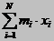
y_num
= + 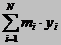
The
value of point-weights is added to the variable den.
den
= + 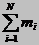
|
x_CG= (x_num/den);
y_CG= (y_num/den);
}
|
Finally,
the result of dividing the x_num and y_num variables by the den variable is
stored in the x_CG and y_CG variables.
x_CG
= (x_num/den) à x_CG
= 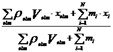
y_CG = (y_num/den) à y_CG = 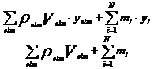
void
output()
{
char filedat[80];
FILE *fp, *fptest;
float raiz;
double pot;
|
The
output() function.
The
output() function creates two files: .post.res, and .log.
The
results to be visualized in GiD Post-process are stored in the .post.res file.
It is this file that stores the data which enables GiD to represent the
distance of each point from the corresponding center of mass.
The
numerical value of the center of mass is saved in the .log file. The accuracy
of this value is directly proportional to the element size.
strcpy(filedat, projname);
strcat(filedat,".log");
fptest = fopen(filedat, "w");
fprintf (fptest, "FILE: %s\n", projname);
fprintf (fptest, "CMAS2D\n2D routine to calculate the mass center
of an heterogeneus object. \n 2008\t
CIMNE\n");
fprintf (fptest, "\n\n\t====> mass center: %lf %lf
\n", x_CG, y_CG);
|
Creating
the .log file.
The
.log extension is added to the project name and a file is created that will
contain the numerical value of the position of the center of mass, which in
turn is stored in the x_CG and y y_CG variables of the program.
Creating
the .post.res file. The output data (results) are stored in this file.
The format
of the .post.res file is as follows:
On
the first line, enter the variables defining the type of result. The first
parameter of the line is the title appearing in the GiD post-process menu. For
this example, the title MC-DISTANCE has been chosen.
Then
enter the values 2 1 1 1 0.
The
first parameter is the type of analysis: 2 correspond to a load analysis.
The
second parameter is the number of steps in the calculation. In this example
there is 1 step.
The
third parameter is the type of result: 1 corresponds to a scalar result.
The
fourth parameter is the position associated to the results: 1 means the results
are associated with nodes.
The
fifth parameter is a description of each component: 0 means there is no
description.
To conclude,
list the results (distance from the center of mass) in the following format:
Node
identifier (inod) associated result (pot)
/*
jumpline function */
void
jumpline (FILE* filep)
{
char buffer[80];
fgets(buffer, 80, filep);
}
|
Executing
the Jumpline function.
File:
cmas2d.c
|
#include
<stdio.h>
#include
<stdlib.h>
#include
<fcntl.h>
#include
<string.h>
#include
<math.h>
#define
MAXMAT 1000
#define
MAXCND 1000
char
projname[1024];
int
i, ielem, inod, icnd;
double *x, *y;
int *N, *imat;
int
nodc[MAXCND];
double
rho[MAXMAT], wval[MAXCND];
int
Nelem, Nnod, Nmat, Ncnd;
double x_CG, y_CG;
void
input(void);
void
calculate(void);
void
output(void);
void
main (int argc, char *argv[])
{
strcpy (projname, argv[1]);
input();
calculate();
output();
}
void
input ()
{
char filedat[80], sau1[80], sau2[80];
FILE* fp;
int aux,j;
void jumpline (FILE*);
strcpy(filedat, projname);
strcat(filedat,".dat");
fp = fopen(filedat, "r");
for (i=0; i<6; i++)
jumpline (fp);
fscanf(fp, "%d %d", &Nelem, &Nnod);
x=(double *) malloc((Nnod+1)*sizeof(double)); if (x==NULL) {error=1;}
y=(double *) malloc((Nnod+1)*sizeof(double)); if (y==NULL) {error=1;}
N= (int *) malloc((Nelem+1)*3*sizeof(int)); if (N==NULL) {error=1;}
imat=(int *) malloc((Nelem+1)*sizeof(int)); if (N==NULL) {error=1;}
if (error)
{
strcpy(fileerr, projname);
strcat(fileerr,".err");
ferr = fopen(fileerr, "w");
fprintf(ferr, "\n \n \n ***** ERROR: Not enough memory. *****
\n");
fprintf(ferr, "(Try to calculate with less
elements)\n");
exit(1);
}
for (i=0; i<6; i++)
jumpline (fp);
/* reading the coordinates*/
for (inod=1; inod<=Nnod; inod++)
fscanf (fp, "%d %lf %lf", &aux, &x[inod],
&y[inod]);
for (i=0; i<6; i++)
jumpline (fp);
/* reading connectivities */
for (ielem=1; ielem<=Nelem; ielem++){
fscanf (fp, "%d", &aux);
for(j=0;j<3;j++) fscanf (fp, "%d", &N[(ielem-1)*3+j]);
fscanf (fp, "%d", &imat[ielem]);
if (imat[ielem]==0)
{
strcpy(fileerr, projname);
strcat(fileerr,".err");
ferr = fopen(fileerr, "w");
fprintf(ferr, "\n \n \n **ERROR: Elements with no material!!**
\n");
exit(1);
}
}
for (i=0; i<5; i++)
jumpline (fp);
fscanf(fp, "%s %s %d",sau1, sau2, &Nmat );
for (i=0; i<3; i++)
jumpline (fp);
/* reading density of each material */
for (i=1; i<=Nmat; i++)
fscanf (fp, "%d %lf", &aux, &rho[i]);
for (i=0; i<4; i++)
jumpline (fp);
/* reading conditions */
fscanf(fp, "%d", &Ncnd);
for (i=0; i<6; i++)
jumpline (fp);
for (icnd=1; icnd<=Ncnd; icnd++)
{
fscanf (fp, "%d %lf", &nodc[icnd], &wval[icnd]);
jumpline (fp);
}
fclose (fp);
}
void
calculate ()
{
double v, aux1,aux2,aux3;
int n1, n2, n3;
int mat;
double x_CGi, y_CGi;
double x_num=0, y_num=0, den=0;
for (ielem=1; ielem<=Nelem; ielem++)
{
n1= N[0+(ielem-1)*3];
n2= N[1+(ielem-1)*3];
n3= N[2+(ielem-1)*3];
/* Calculating the volume (volume is the area,
provided we are dealing with 3D surfaces) */
v=fabs(x[n1]*y[n2]+x[n2]*y[n3]+x[n3]*y[n1]-x[n1]*y[n3]-x[n2]*y[n1]-x[n3]*y[n2])/2;
/* The geometric center of the element is calculated */
x_CGi= (x[n1]+x[n2]+x[n3])/3;
y_CGi= (y[n1]+y[n2]+y[n3])/3;
/* sums are calculated */
mat= imat[ielem];
x_num+= rho[mat]*v*x_CGi;
y_num+= rho[mat]*v*y_CGi;
den+= rho[mat]*v;
}
/* point weights */
for (icnd=1; icnd<=Ncnd; icnd++)
{
inod= nodc[icnd];
x_num+= wval[icnd]*x[inod];
y_num+= wval[icnd]*y[inod];
den+= wval[icnd];
}
x_CG= (x_num/den);
y_CG= (y_num/den);
}
void
output()
{
char filedat[80];
FILE *fp, *fptest;
double raiz;
double pot;
strcpy(filedat, projname);
strcat(filedat,".log");
fptest = fopen(filedat, "w");
fprintf (fptest, "FILE: %s\n", projname);
fprintf (fptest, "CMAS2D\n2D routine to calculate the mass center of an
object.\n");
fprintf (fptest, "\n\n\t====> mass center: %lf %lf
\n", x_CG, y_CG);
/* writing .post.res */
strcpy(filedat, projname);
strcat(filedat,".post.res");
fp = fopen(filedat, "w");
fprintf (fp, "MC-DISTANCE 2 1 1 1 0\n");
for (inod=1; inod<=Nnod; inod++)
{
/* distance from the center of masses */
raiz= (x_CG-x[inod])*(x_CG-x[inod]) +
(y_CG-y[inod])*(y_CG-y[inod]);
pot = sqrt (raiz);
fprintf (fp, " %6d %14.6lf\n", inod, pot);
}
fclose (fp);
fclose (fptest);
free(x);
free(y);
free(N);
free(imat);
}
/*
jumpline function */
void
jumpline (FILE* filep)
{
char buffer[80];
fgets(buffer, 80, filep);
}
|